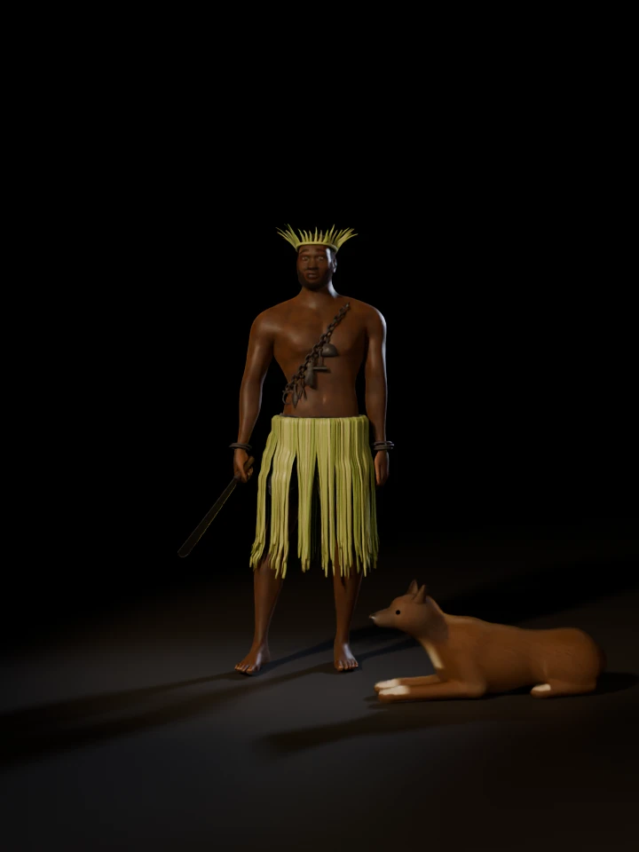

Yorùbá òrìṣà of iron, war, hunting and the road
Ògún of Ìrẹ̀
A photoreal study of the òrìṣà of iron at night in his forge: short trousers of ẹ̀tù under a fringe of màrìwò, a chain of small iron tools across his chest, the àdá in his hand, and his dog lying beside him in the firelight.
- Emblem
- Iron
- His other symbols
- The dog and the palm frond
- Colours in Candomblé
- Red, black and green in Rio de Janeiro; blue in Bahia
- His town
- Ìrẹ̀, where he was the first king
![A powerfully built dark-skinned man stands barefoot in an open smithy at night, bare-chested, with a fringe of pale green palm-frond strips over dark indigo shorts and a crown of palm leaflets on his head. An iron chain hung with small tools crosses his chest and he holds a machete low in his right hand. Beside him a tan dog with a white chest lies with its head up, a clay hearth glows and throws sparks on his left, and an anvil with a glowing bar stands on his right against a mud wall under a thatched roof.](img/hero.webp)
Turn him round
Drag across the figure, use the slider, or focus it and press the arrow keys. Thirty-six views, ten degrees apart, rendered under the same lights as the figure and his dog turn.

Loading views 0 / 36
- 0°
The chain from his left shoulder to his right side with its six tools, the àdá held low, and the dog at his left foot.
- 90°
The àdá's blade in full, from the fist to the rounded point, and the fringe falling over the trousers.
- 180°
The chain crossing his back, the twisted cord the fringe hangs from, and the close-cut hair under the band of fronds.
- 270°
The dog lying alongside him and three iron bangles on his left wrist.
Close up
Select a picture to see it at full size.
A smith's face
Imagined · the sources do not describe him
No source used here says how Ògún looks. He is the smith, the hunter and the warrior, so he is drawn as a heavy-shouldered man of about thirty-five, with his hair and beard kept short for the fire. The band of màrìwò on his head follows his gallery figure.
Source: Wikipedia: Ogun
A chain of tools
Iron · hoe, hammer, àdá, tongs, spearhead, ring
Iron is his primary emblem, and his followers wear chains of iron implements. The six here run from the farmer's hoe to the hunter's spearhead, by the study's choice; the gallery figure carries a hoe, a hammer, a blade and a ring.
Source: Wikipedia: Ogun
Àdá
Machete · about 58 cm
In some traditions he cleared a path for the other òrìṣà to enter the world with a metal machete, helped by a dog. This one is a smith's blade, left black from the fire and ground bright along the edge. Its shape is the study's own.
Source: Wikipedia: Ogun
Màrìwò over ẹ̀tù
Young palm fronds · indigo aṣọ-òkè
Ògún's worshippers tie young, unwilted palm fronds round the body at festivals such as Ọlọ́jọ́. Under them he wears short trousers of ẹ̀tù: very dark indigo with a fine check of lighter threads, named for the guinea fowl's speckled feathers.
Sources: Wiktionary: màrìwò, Adire African Textiles
Ajá
The dog · the hunter's companion
The dog is one of his three primary symbols, with iron and the palm frond, and dogs are the traditional companions of hunters. Here a village dog lies by the fire at his side. Its coat and pose are the study's own.
Source: Wikipedia: Ogun
The anvil
Iron block · bar at forging heat
Hunters, blacksmiths and warriors are his traditional followers. The anvil is an iron block let into a hardwood stump, with a bar on its face held in long tongs, its end at forging heat.
Source: Wikipedia: Ogun
Hearth and bellows
Clay · charcoal · sparks
The smithy follows the forge stage of the game these studies are made for: a clay hearth fed through a clay pipe from two pot bellows, a heap of charcoal, and sparks thrown up by the fire. Its forms are generic, not a record of a real smithy.
The floor
Beaten earth · slag · night
Laterite beaten flat, dark with charcoal dust round the hearth and the anvil, with slag kicked about it. The night and the moonlight through the open side of the shed are the study's own.
What is sourced, what is imagined
None of the sources used here describes how Ògún looks. What he wears follows his gallery figure and what the sources say his followers wear and carry, so this figure is an interpretation, not a cult image. This list keeps the two apart.
From the sources
- Iron, his primary emblem, and the chains of iron implements his followers wear. Wikipedia: Ogun
- The dog and the palm frond, his other two primary symbols. Dogs are the traditional companions of hunters. Wikipedia: Ogun
- Màrìwò, young unwilted palm fronds tied round the body by Ògún's worshippers at festivals such as Ọlọ́jọ́. Wiktionary
- The machete. In some traditions he cleared a path for the other òrìṣà with a metal machete, helped by a dog. Wikipedia: Ogun
- Ẹ̀tù, very dark indigo aṣọ-òkè with a fine check of lighter threads, named for the speckled plumage of the guinea fowl. Guardian Nigeria, Adire African Textiles
- Smiths, hunters and warriors, his traditional followers. Wikipedia: Ogun
- Ìrẹ̀, where he was the first king, and Ìrẹ̀-Èkìtì, where his followers say he went into the earth. Wikipedia: Ogun
This study’s choices
- His face, age and build, his hair and beard. None of the sources used here describes how he looks.
- Following his gallery figure: the trousers of ẹ̀tù under the fringe, the band of fronds on his head, the iron bangles, and the dog at his side.
- The six tools on the chain and their forms, and the shape of the àdá.
- The cut of the trousers and the spacing of the check in the cloth.
- How the fronds are split, folded over the cord and tied.
- The dog's coat and pose. A village dog, lying alert.
- The forge and the night. The layout follows the game's forge stage; the hearth, bellows and anvil are generic forms, and the moonlight is invented.
- Where sources differ. Wikipedia tells two endings at Ìrẹ̀: in some stories he killed the subjects who failed to respect him and then himself with his own sword, while his followers believe he went into the earth instead of dying. His colours vary by tradition, and the gallery gives his day as the third of the Yorùbá four-day week, while Candomblé consecrates Tuesday to him.
How he was made
The body starts from MakeHuman’s free base mesh, shaped as a heavy-shouldered man and rigged. His right hand was solved to the àdá’s real handle: each finger closes at all three joints at once until it rests on the wood, and the thumb comes over onto the index finger.
The ṣòkòtò are cut from the body with the fork of the legs bridged, as woven cloth bridges it, then simulated while a drawstring draws the waist in, so the gathers form on their own. Each strip of màrìwò folds over a twisted cord and falls the way a fringe hangs from the hips: below its widest it may spread, but it never draws in.
The chain lies where a plane from his left shoulder to his right side cuts the body, pulled taut across the hollows, and each tool hangs from it until it meets his chest. The dog is a set of metaballs joined into one skin and coated with hair curves combed from nose to tail.
Every stage is a Python script in 3d/ogun/blender/, using the toolkit in 3d/toolkit/, and the finished scene is 3d/ogun/ogun.blend.
| Ṣòkòtò cloth, simulated vertices | 13,766 |
|---|---|
| Simulated frames | 100 |
| Body mesh vertices, before smoothing | 13,380 |
| Frond strips at the waist / on the head | 280 / 40 |
| Hair curves, head / beard | 71,003 / 28,416 |
| Chain links / tools on the chain | 45 / 6 |
| Iron bangles | 5 |
| Hair curves in the dog's coat | 197,141 |
| Sparks over the hearth | 46 |
| Samples per pixel, stills / turntable | 96 / 32 |
Sources
- Wikipedia: Ogun. His domains and symbols, the chains of iron worn by his followers, the path cleared with a machete and a dog, Ìrẹ̀ and Ìrẹ̀-Èkìtì, dogs as hunters’ companions, his colours and day in Candomblé.
- Wiktionary: màrìwò. Young unwilted palm fronds, tied round the body at festivals such as Ọlọ́jọ́ by Ògún’s worshippers.
- N. Egbo, “The rich colours of aso-oke”, Guardian Nigeria (2021). Ẹ̀tù as dark indigo aṣọ-òkè with light stripes, said to take the colour of the guinea fowl.
- Duncan Clarke, “Cloth of the month: an early indigo dyed aso oke wrapper”, Adire African Textiles (2014). Very dark indigo strip weave patterned with a fine check of lighter threads is called etu, after the guinea fowl’s speckled plumage.
- MakeHuman Community: MPFB2. The CC0 base mesh, targets and rig used for the body.